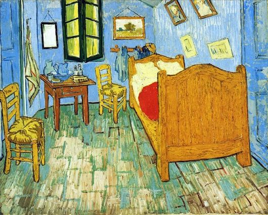

«Спальня в Арле»
Во время пребывания в Арле Ван Гог нарисовал свою спальню. В течение нескольких дней он болел и был прикован к кровати, чем и объяснил свое желание нарисовать именно эту комнату. На самом деле существует три версии картины.
Первую версию картины художник написал в 1888 году и отправил эскиз своему брату. Ван Гог хотел, чтобы картина оказывала успокаивающее действие. Специально для этого нарисовал стены бледно-фиолетовыми. Деревянная кровать и стул желтого оттенка, который являлся любимым цветом Ван Гога, а покрывало алого цвета. При изображении окна использован зеленый цвет, а сами ставни закрыты. Этими разными цветами он хотел выразить абсолютный покой. В настоящее время эта картина находится в музее Ван Гога в Амстердаме.
Однако полотно, которое находилось у брата Тео, было повреждено во время наводнения. Именно поэтому Ван Гог нарисовал вторую копию картины. Хоть все предметы сохранили свое месторасположение, некоторые цвета были немного изменены. С 1926 года картиной владеет Художественный институт в Чикаго.
В 1889 году нарисовал уменьшенные копии своих наиболее получившихся работ. Третью копию «Спальни в Арле» он подарил сестре. А с 1959 года картина находится в музее Орсэ в Париже.
В работе использованы яркие и смелые цвета. Необычным аспектом картины является искривленное изображение спальни, что делает ее уникальной и легко узнаваемой. Через цвета и способы нанесения краски Ван Гог выразил характер и эмоции.
Возможно, изображение спальни передает чувство благополучия и хозяйственности в собственном доме. Прочная и простая с виду кровать олицетворяет собой спокойствие и защищенность. А четкие контуры вызывают ощущение устойчивости и стабильности.
Хоть работа не была признана при жизни художника, она оказала большое влияние на следующее поколение художников.